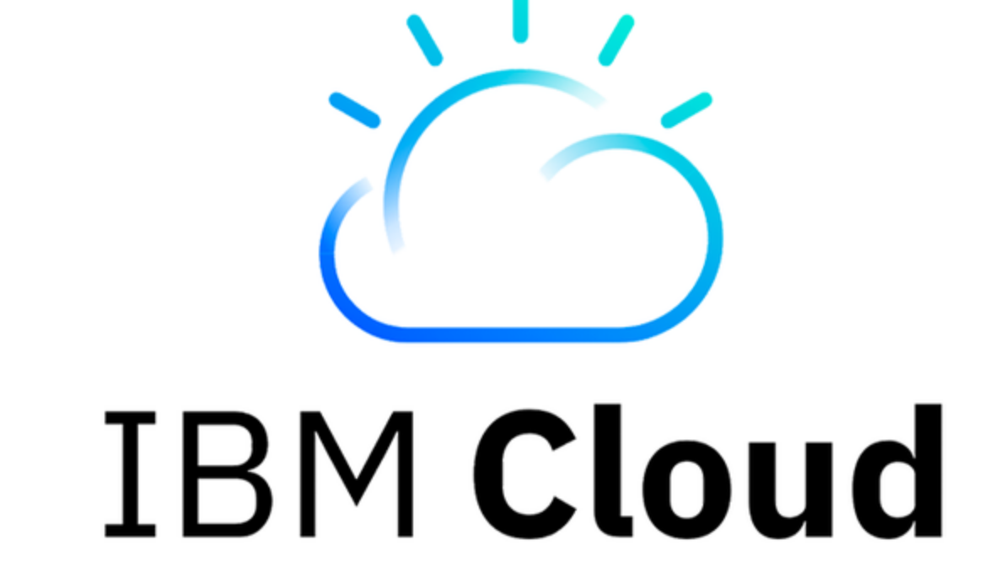

클라우드 컴퓨팅이란?
초기 투자나 장기 계약 없이 인터넷을 통해 IT 리소스와 애플리케이션을
원할 때 어디든지 (on-demand) 사용한 만큼만 요금을 내는 서비스
기말 프로젝트
1871292 허예원
초기 투자나 장기 계약 없이 인터넷을 통해 IT 리소스와 애플리케이션을
원할 때 어디든지 (on-demand) 사용한 만큼만 요금을 내는 서비스
왜 AWS를 많이 사용하는가?
수 분 만에 인프라 구축 가능
빠르게 변화에 대응
혁신을 위한 다양한 실험 가능
불필요한 인프라 관리 업무 제거
사용한 만큼만 지불하며 규모의 경제로 인한 지속적인 비용 절감
고정비용을 가변비용으로 대체
미리 서버를 구매할 필요 없음
빠른 시간 내 글로벌 서비스 구현 가능
필요 용량에 대한 예측 불필요
수요에 맞춘 유연한 확장
제목 누르면 기사로 이동
AWS외에도 클라우드 서비스를 이용할 수 있는 플랫폼
Azure 완전한 클라우드 컴퓨팅 플랫폼으로 응용 프로그램 개발, 테스트, 배포, 관리를 위한 클라우드 서비스를 통합한 플랫폼. 좋아하는 도구, 프레임 워크를 사용하여 글로벌 네트워크에서 application을 자유롭게 빌드, 관리, 배포할 수 있다. 가상 머신, 기존 애플리케이션 실행, 지능형 봇, 합성 현실, AI, 기계학습 서비스,동적으로 확장되는 storage solution ... 등 100여 개의 서비스 이용이 가능하다. Azure Portal이라는 웹 기반 통합 콘솔을 이용해 간단한 웹 앱, 복잡한 클라우드 배포 등 모든 것을 구축, 관리, 모니터일 할 수 있다. 필요한 옵션을 구성하여 최적의 환경을 구축한다.
IBM Cloud 데이터, 컨테이너, AI, IoT 및 블록체인을 포괄하는 190개가 넘는 제품과 서비스를 갖춘 풀스택 클라우드 플랫폼. 2017년에 IBM Cloud로 통합되었음. 여러 open source 기술과 이를 활용한 ML/AI 업무 중심. Iaas, Paas를 포괄하는 public cloud와 기존 인프라 혼용의 Hybrid cloud 지원한다. 주요 서비스 중 AI는 Watson Studio를 이용해서 머신러닝 서비스를 사용할 수 있다.